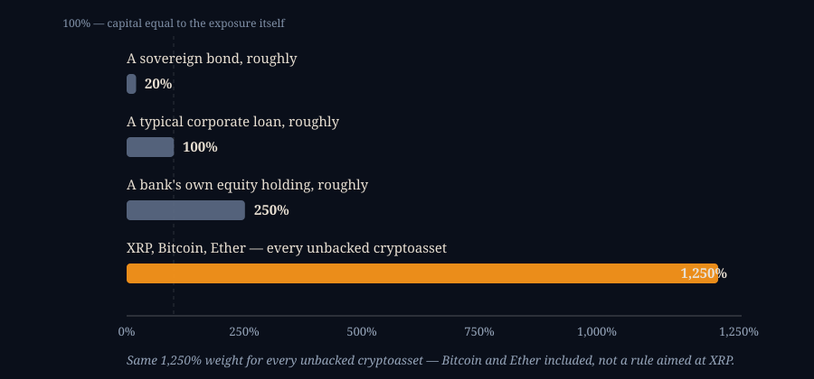

XRP, Basel, and the 1,250 Percent Number
SEPTEMBER 16, 2026

A video making the rounds walks through this argument: stock exchanges are tokenizing everything right now, which is true — then it pivots to the Basel Committee, runs quickly through Basel I, II and III, and lands on a specific claim: the newest paper to come out of Basel mentions XRP a great many times, and that can only mean one thing — the Bank for International Settlements is about to use it. I went and found the actual paper. It's real, it does name XRP repeatedly, and it's a more interesting story than "BIS is adopting XRP" — not because that claim is a total fabrication, but because it's built out of two entirely different Basel-family documents welded together, with the one number that would puncture it left on the cutting-room floor.
The Real Part: Everything Actually Is Getting Tokenized
Start with what the video gets right, because it's genuinely happening. The Depository Trust & Clearing Corporation — the utility that settles the overwhelming majority of U.S. stock trades — ran a production pilot moving Russell 1000 stocks, ETFs and Treasuries onto tokenized rails in July 2026, with more than fifty firms participating ahead of a full October 2026 launch, CoinDesk reported. Nasdaq was the marketplace where those pilot trades executed before conversion into tokens at DTCC, under an SEC-approved rule change letting tokenized shares trade on the same order book as ordinary ones. NYSE's parent, Intercontinental Exchange, announced its own tokenized-trading plans back in January. None of that is hype — it's Wall Street's own settlement plumbing, moving.
Basel I, II and III, in One Paragraph
Where the video's argument starts doing real work is the pivot to Basel, so it's worth being precise about what that word actually names. The Basel Committee on Banking Supervision, housed at the Bank for International Settlements in Basel, Switzerland, has published three successive international bank capital frameworks — Basel I (1988), Basel II (2004) and Basel III (agreed in 2010–2011, phased in through the 2020s) — each one setting how much capital a bank must hold against the risk of what it lends and invests in. None of the three was originally about cryptocurrency at all; Basel III is a response to the 2008 financial crisis. What ties this to XRP is a single, much narrower addition: in 2022 the Committee finalized a specific standard for how banks must treat cryptoasset holdings on their own books, effective since January 2025. That standard is real, and XRP genuinely appears in it — but not in the paper the video is actually pointing at.
The Paper That Actually Names XRP
The newest Basel-family document to mention XRP by name, repeatedly, is real: BIS Working Paper No. 1374, "Verifiable official statistics: a blockchain-based approach," published September 2, 2026 by five BIS researchers — Mario Rusev, Rafael Schmidt, Edward Lambe, Christian Schmieder and Glenn Philip Tice. The problem it's solving has nothing to do with payments: SDMX, the technical standard institutions use to publish official economic statistics, has no built-in way to cryptographically prove a dataset hasn't been altered after release. The paper's proof-of-concept fixes that by taking a batch of statistical datasets, compressing them into a single cryptographic fingerprint, and anchoring that fingerprint on a public ledger so anyone can later verify the data is genuine and untouched. The line doing the actual work, straight from the paper: "a single summary value covering a batch of data sets is recorded on the XRP Ledger, where it is timestamped and cannot subsequently be altered." The researchers picked XRPL for this specific job — low fees, fast finality, well-documented consensus — the same reasons a lot of technical proof-of-concept work picks whatever ledger is cheap and well-understood to build on. XRP the currency is not transacted, held, or recommended anywhere in the paper. It's a timestamp service. The paper says so itself: it's a proof of concept, not a production system and not a commitment to anything.
The Other Document, and the Number That Gets Left Out
Here's where two separate things get folded into one story. Separately from that research paper, the Basel Committee also runs a periodic monitoring exercise across roughly 150 banks, including 29 globally systemic ones, tracking what cryptoassets they actually report holding exposure to — and XRP recently entered the top five most-reported names in that survey, alongside Bitcoin, Ethereum and Solana. That part is genuinely a sign banks are looking at XRP. What it comes bundled with is the number the video skips entirely: under the Committee's own 2022 standard, XRP — like Bitcoin, like Ether, like essentially every cryptoasset without a qualifying backing mechanism — is classified "Group 2b," and a bank holding one must apply a capital risk weight of 1,250 percent to that exposure.

A 1,250 percent risk weight means a bank must hold capital equal to the entire value of its XRP exposure, and then some — the Committee's own published framework spells out that this treatment is deliberately conservative, and that a bank's total exposure to this whole category is separately capped at roughly 1–2 percent of its Tier 1 capital before even harsher treatment kicks in. That is about as far from an on-ramp to institutional adoption as a regulator can design a rule to be. It is not a rule written about XRP specifically — Bitcoin and Ether get the identical 1,250 percent, and always have, since the same standard applies to any cryptoasset in that bucket. XRP showing up in a bank exposure survey conducted under a rule engineered to make holding it as expensive as possible is real, but it's evidence banks are cautiously testing the water under a punitive capital charge, not evidence Basel is preparing to embrace it.
What the Video Actually Did
Laid out like this, the leap is three separate moves stacked on top of each other. First, two different documents from two different parts of the same institution — an unrelated technical research paper about statistics integrity, and a periodic bank-exposure survey conducted under a capital rule — get treated as one continuous "Basel" story simply because both come from the BIS. Second, a narrow proof-of-concept that timestamps data fingerprints gets read as a payments or settlement decision, which the paper never claims to be. Third, and this is the one that actually inverts the story: the very capital rule that made XRP's appearance in a bank survey newsworthy is the same rule punishing any bank that holds it, and that number simply never gets mentioned. The paper really does name XRP a lot, dozens of times by one count — it's a real, current, September 2026 document, genuinely the newest one in the Basel family to do so. What it's testing is whether a public ledger can timestamp a government's economic statistics tamper-evidently. That's a smaller and, I'd argue, still a genuinely interesting story on its own — it just isn't the one the video is telling.
The Coin and the Company, in Plain Facts
Since the rest of this entry is about one specific claim, it's worth closing with the underlying basics — the numbers a reel usually skips past on its way to a price target.
How many XRP exist. All 100 billion XRP that will ever exist were created at once, in the genesis ledger, when the XRP Ledger launched on June 2, 2012. There is no mining and no staking, and the code has no function to create more. About 62.88 billion of those are in circulation as of September 15, 2026; Ripple itself holds most of the rest, with roughly 32.6 billion still sitting in the escrow contracts described above.
Inflation rate: there isn't one, in the usual sense. XRP's supply can only go down, never up — the opposite of Bitcoin, which is still issuing new coins on a fixed schedule until around 2140. Every XRPL transaction permanently destroys a small fee, 0.00001 XRP (10 "drops") at minimum, and that XRP is gone for good — not paid to anyone, including Ripple. In practice that burn is tiny: cumulative destroyed XRP since 2012 totals somewhere around 14.4 million, or about 0.014 percent of the original 100 billion. So "deflationary" is technically accurate and practically negligible — the honest description is a fixed, capped supply that shrinks by a rounding error a year, not a currency getting meaningfully scarcer over time.
How it's secured, and whether that's the same thing as Bitcoin. XRP does not use Bitcoin's proof-of-work — no mining, no energy-intensive hash race. Instead, the XRP Ledger runs its own consensus protocol: more than 150 independent validators operate on the network, and each participant chooses a list of validators it trusts (a "Unique Node List," or UNL) to help it agree on the ledger's state. Once roughly 80 percent of a node's trusted validators agree, a ledger closes and is treated as final — in practice this takes 3 to 5 seconds, versus Bitcoin's roughly 10-minute block time. There's no recorded instance of the network processing a fraudulent transaction. That said, "secure" and "decentralized" are different questions with different answers.
Is it decentralized? This one is a genuine, ongoing argument, not a settled fact, and it's worth hearing both sides rather than picking one. Ripple runs only 1 of the 150-plus validators on the network and only 1 of the 35-plus validators on the default recommended UNL, and anyone can run a validator or choose a different trusted list — nothing in the protocol forces a node to follow Ripple's recommendation. That's the case Ripple and its former CTO make when critics call the network centralized. The counter-argument, made by critics like Cyber Capital's Justin Bons, is that because Ripple and the XRP Ledger Foundation publish the default list nearly everyone actually uses, diverging from it risks splitting off from the rest of the network — which in practice gives whoever publishes the recommended list outsized influence over who counts as a trusted validator, even without owning the majority of them outright. Both descriptions are accurate as far as they go; they disagree about how much a "default that almost everyone follows" differs from a rule that's formally enforced.
Is it similar to Bitcoin? As a public, traded digital asset with a capped supply, yes. Almost everywhere else, no. Bitcoin is mined, inflating on a fixed and publicly known schedule until its 21 million cap is reached around 2140; XRP was entirely pre-created in one ledger in 2012 and can only shrink from there. Bitcoin's security comes from computational cost — attacking it means outspending the entire honest mining network; XRP's comes from a validator supermajority agreeing on history, a different model with different trust assumptions, not a weaker or stronger one in any simple sense. And the two were built for different jobs: Bitcoin was designed as a decentralized store of value and payment network with no company behind it; XRP was built by Ripple, a real Silicon Valley company, explicitly as a fast, cheap bridge asset for moving money between currencies.
The company itself. Ripple was founded in 2012 — originally as OpenCoin — by Chris Larsen, Jed McCaleb and Arthur Britto; Brad Garlinghouse has been CEO since 2015, and the company is headquartered in San Francisco. It's still privately held: Ripple's president said in January 2026 the company planned to stay that way, though Garlinghouse struck a more open tone about an eventual IPO by August. Its most recent private valuation, tied to a share buyback in March 2026, was around $50 billion, up from roughly $40 billion at a funding round the previous November. Ripple's actual business is selling cross-border payments infrastructure to banks and financial institutions — RippleNet and On-Demand Liquidity, discussed earlier in this piece — not XRP speculation, though selling XRP from its own holdings has historically also been a real source of company revenue.
The Same Bet, Wearing a Different Ticker
There's a question underneath all of this that the reel never asks and most of the coverage doesn't either: if you already hold Bitcoin, does adding XRP actually give you a second, different bet — or is it just more of the first one, wearing a cheaper price tag? I pulled the actual daily returns for XRP, Bitcoin and MicroStrategy going back two years and ran the correlation myself rather than assume an answer.
- XRP vs. Bitcoin, trailing 2 years: 0.63 correlation, XRP annualized volatility 104%
- XRP vs. Bitcoin, trailing 1 year: 0.87 correlation
- XRP vs. MSTR, trailing 2 years: 0.49 correlation (0.69 over the trailing year)
- MSTR vs. Bitcoin, trailing 2 years, for comparison: 0.73 correlation, MSTR annualized volatility 103%
- Bitcoin's own annualized volatility: 53%
Two things jump out. First, XRP's correlation to Bitcoin has been climbing, not falling — 0.63 over two years, 0.87 over the last one, which is now higher than MicroStrategy's own 0.73 correlation to Bitcoin, and MSTR is a company that holds Bitcoin on its balance sheet on purpose. A 0.87 daily-return correlation sits in the same range this site has already flagged elsewhere as "the same bet, not a second one" — the finding behind why a couple of stock indexes that move together 87–95% of the time don't actually diversify anything. Second, XRP isn't even the calmer way to hold that bet: its own volatility, 104% annualized, is higher than MicroStrategy's 103% and roughly double Bitcoin's 53%. Adding it to a book that already holds Bitcoin doesn't spread the risk out — it re-levers the same risk at a higher vol, through a smaller, newer, less liquid wrapper.
What This Would Mean for My Own Book
I do run a live rebalancing book — Arbitrageur, currently MSTR 45% / Bitcoin 45% / cash 10% — and this piece got me asking whether XRP belongs in it. Short answer: I'm not currently adding it. But the more useful part of the exercise isn't the yes/no, it's what a proper size would actually be if I ever did — tied to something falsifiable rather than a vibe: what's the actual probability that the one real, quantified bull claim about XRP comes true, and what would that be worth?
The one claim worth pricing is Ripple CEO Brad Garlinghouse's own stated target, from earlier in this piece: XRP capturing 14 percent of SWIFT's roughly $150 trillion in annual volume within five years of June 2025 — about $21 trillion a year running through XRP as the bridge asset. Turning that into a price target needs one more number nobody states out loud: how many times a year the XRP in circulation would need to turn over to move that much volume. On-Demand Liquidity is built specifically so a bank holds XRP for seconds, not as a balance — which matters, because the required market cap swings enormously depending on that assumption:
- Turns over once a year → needs a $21,000B market cap, about 235× today's
- Turns over monthly → needs $1,750B, about 19.6× today's
- Turns over weekly → needs $404B, about 4.5× today's
- Turns over 100 times a year → needs $210B, about 2.4× today's
- Turns over daily — closer to how ODL is actually designed to work → needs only $57.5B, about 36 percent below today's $89.35B
Full success on the SWIFT claim doesn't obviously mean the price has to go up at all — if ODL genuinely works the way it's designed to, several of the "adoption succeeded" scenarios need less market cap than exists today. That alone argues against sizing this as a moonshot bet on price.
Then the probability itself. Ripple's own reported $1.3 trillion in ODL volume for the second quarter of 2025 annualizes to about $5.2 trillion — roughly a quarter of the $21 trillion target already, in raw dollar terms. Closing the rest of the gap needs about 42 percent compounded annual growth for four more years straight. That's a real, live adoption curve, not a made-up number — and also exactly the kind of sustained growth rate that most multi-year corporate targets miss. Putting a number on it is a judgment call, not a measurement: I put it at roughly a 10 to 15 percent chance of something in that neighborhood actually happening on anything like the stated timeline.
Run the expected value with the middle of that range — 12 percent odds, a 2.5× payoff if it lands, a 25 percent loss in the more likely case where XRP just trades as higher-beta, highly-correlated crypto — and it comes out slightly negative: 0.12 × 1.50 + 0.88 × (−0.25) = −0.04. Priced as a bet on the numbers alone, that argues for zero, not a position. The honest reason to hold anything at all is convexity, not edge: a small, cheap claim on a right-skewed outcome you're roughly breakeven-to-negative on in expectation, not a conviction call.
So: I'm not currently adding XRP to Arbitrageur. But if I ever did, the ceiling is 1 percent or less, funded out of the cash sleeve — smaller than the 3–5 percent a pure expected-value read would technically support. My own read on the claim is blunter than the math needs it to be: I think this is a moonshot at best, and I'd rather the position size say so honestly than dress up a coin flip as a forecast. The number is really a statement about my confidence in Ripple actually pulling off what it's claiming, not a target I'm working toward.
Where I Could Be Wrong
- The exact count of XRP mentions in Working Paper 1374 is a figure I've seen reported by outside coverage of the paper rather than counted by hand myself; the substance of what those mentions describe, I've verified against the paper's own abstract and the quoted line above.
- The standardized-approach risk weights I've used for a sovereign bond, a corporate loan and a bank equity holding in the chart are typical figures for illustration and vary by the specific exposure and jurisdiction's implementation — the 1,250% Group 2b crypto figure is the one precise, load-bearing number, and it's the Committee's own published rule.
- The DTCC/Nasdaq tokenization pilot is a real, ongoing rollout as of this writing; its scope could change before the stated October 2026 launch.
- I haven't read every line of Working Paper 1374's technical appendix — the quote and mechanism described above come from the paper's own stated methodology, not an independent replication of the prototype.
- The 14.4 million cumulative-burn figure comes from a secondary tracker, not a live on-chain count I ran myself, and moves slightly every day; the 0.014% scale of it against the 100 billion supply is what I'd stand behind, not the exact last digit.
- The decentralization section describes a real, unresolved argument on purpose rather than picking a winner — both "Ripple runs one validator and can't force a fork" and "almost everyone still follows Ripple's recommended list" are true statements, and reasonable people weight them differently.
- Ripple's $50 billion valuation comes from press reporting on a private share buyback, not an audited figure or a public filing — private companies don't have to disclose this, and buyback pricing isn't the same thing as a market-clearing price.
- The correlation and volatility figures are from a daily-return calculation I ran myself against Yahoo Finance price data, not an independently reviewed dataset — the direction (rising correlation, comparably high volatility) is the load-bearing part, not the exact second decimal.
- The 10–15 percent probability I put on the SWIFT-capture claim, and the 2.5× / −25% payoff scenarios in the expected-value math, are my own judgment calls, stated as such — not measurements. Move either input and the number moves with it; someone with a different read on Ripple's adoption curve would reasonably land somewhere else.
- I don't currently hold XRP in Arbitrageur or anywhere else — the 1 percent figure above is a ceiling for a decision I haven't made, not a position on the books.